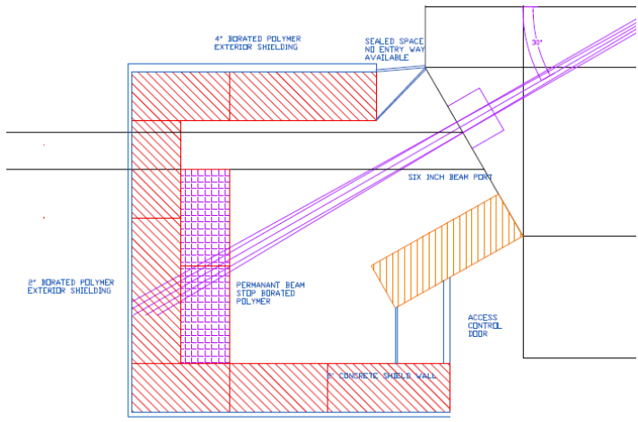
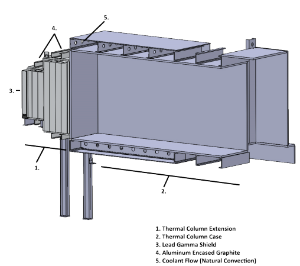

B.S. capstone · spring 2026
Shielding verification for the UMLRR 5 MW upgrade
The problem
UMass Lowell is planning to upgrade the UMLRR from 1 MW to 5 MW. Five times the power means roughly five times the fluence at every facility boundary, and the existing shielding needs to be re-evaluated against the regulatory dose target of 2 mrem/h. The two facilities that matter most are the 6-inch beam port, which delivers a hard neutron spectrum with a prominent 7.65 MeV iron capture gamma line, and the thermal column, which delivers a much softer graphite-moderated spectrum at higher total fluence.

The method
I wrote a Python calculator that takes MCNP-generated fluence spectra for each facility and computes the combined deep dose equivalent rate behind any thickness of ordinary concrete. Photons go through an energy-binned exposure calculation with Berger buildup factors, since a bare exponential underestimates transmitted dose by roughly an order of magnitude at these depths. Neutrons go through 23-group dose conversion factors originally computed by Wyckoff and Chilton, interpolated in the log domain to keep the values physical across five decades. Brent's method then solves for the exact thickness where the combined dose rate crosses the target.
Fluence scales linearly with power to first order, so the same tool answers the question at 1 MW, 5 MW, or anywhere in between with one parameter.
The results
The fivefold power increase costs surprisingly little extra concrete because attenuation is exponential. More interesting is what dominates at depth: neutrons attenuate faster through concrete than high-energy photons, so both facilities end up photon-limited at the solution thickness, 70% of the residual dose at the beam port and 88% at the thermal column. The two requirements also converge to within 1.4 cm of each other at 5 MW for exactly that reason.
These are conservative ordinary-concrete equivalents. The installed shielding uses borated polyethylene at the beam port and barium carbonate concrete bricks at the thermal column, both better per centimeter than the model assumes, so the material-specific comparison is the natural follow-on study.

The errata hunt
While validating the neutron dose conversion factors, I compared the tabulated values in a standard shielding reference against the original 1973 Wyckoff and Chilton data and found four typographical errors. One sits in the energy range this analysis uses: the 15 to 25 MeV group at 500 g/cm² of concrete is listed at 1.4×10-16 Sv·cm² and should be 1.4×10-15, a factor of ten. All calculations here use the corrected values. Check your tables against their sources.